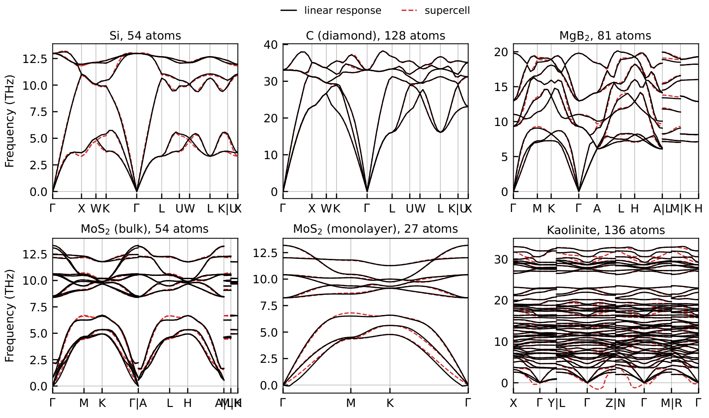
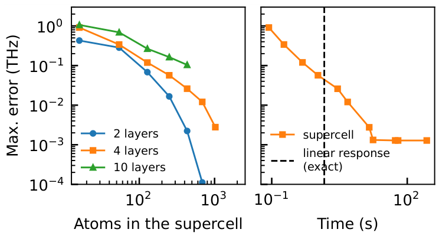
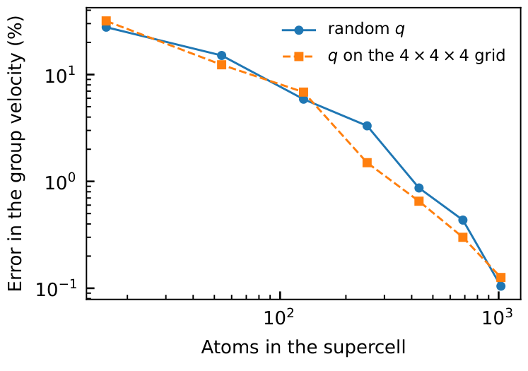
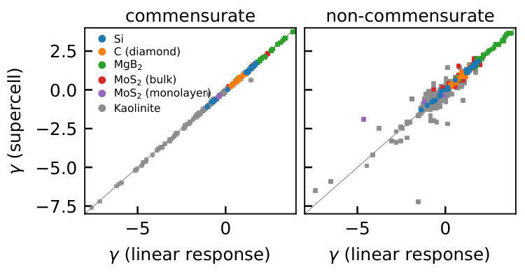
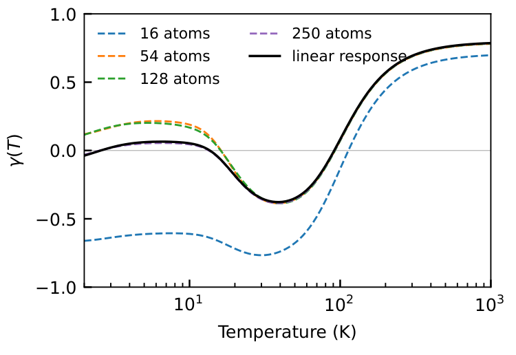

不再靠放大超胞逼近：怎样直接在原胞中计算机器学习势的声子
论文原文 ↗原文：Thalis H. B. da Silva、Hai-Chen Wang、Miguel A. L. Marques，Linear response for machine-learned interatomic potentials: phonons at arbitrary wave vectors from the primitive cell，arXiv:2610.23545，2026。论文｜
晶体中的原子会围绕平衡位置共同振动。不同原子之间振动的相位关系、振动频率和传播速度，决定着动力学稳定性、热膨胀及晶格热输运等性质。机器学习原子间势让这些计算便宜了很多，但实际工作流大多仍然采用传统方法：扩大晶胞，轻微移动原子，计算力，再从这些结果重建声子。
这篇论文指出，这一步数值处理本身可能带来明显误差。多层消息传递网络虽然每层只看有限距离的邻居，但信息能沿多层向更远处传播，其力常数的形式作用范围可达140 Å。一个通常用于高通量计算的超胞，未必覆盖了模型实际表达的响应。
作者提出的办法，是让具有指定波矢的微小位移直接穿过神经网络，计算力的一阶变化，在最小重复单元中得到该波矢的动力学矩阵。它使用已有训练模型，并进一步解析计算群速度和描述振动对体积变化敏感程度的Grüneisen参数。
一、为什么有限大小的超胞会改变声子结果
从“移动一个原子，周围受到多少力”建立振动方程
原子稍微偏离平衡位置后，周围原子的力随之变化。描述这种线性关系的量叫力常数，数学上是总能量对两次原子位移的二阶导数。将不同晶胞之间的力常数按振动的相位关系求和，再用原子质量归一化，就得到动力学矩阵；其本征值给出振动频率的平方，本征向量给出各原子的振动方式。
波矢q规定相邻晶胞怎样错开振动相位，也对应振动的波长和传播方向。将频率沿一条q路径排列，就得到声子色散关系。
有限位移超胞法先在一个有限周期盒子里计算力常数，再通过傅里叶插值预测其他波矢的结果。与超胞周期恰好相容的波矢，其振动可以被这个盒子准确表达；其他波矢的结果依赖插值与力常数范围是否充分。
在具有L层、单层截断半径为r的消息传递网络中，一个原子的能量能受到约Lr范围内原子的影响，而能量二阶导数对应的力常数形式范围可达2Lr。本文所用两层和四层NequIP模型分别达到18 Å和48 Å，十层Prophet模型达到140 Å。这是作者重新考虑声子计算路径的原因。
二、方法怎样做：把跨晶胞的相位带进网络求导
输入一个晶体原胞、一个已训练势和一个目标波矢
以硅为例，计算接收原胞中的原子位置、晶格、原子质量，以及一个已训练的NequIP势，再指定希望计算的波矢q。原胞是能够重复拼出整个晶体的最小单元，图中的某条边除了连接哪两个原子，还记录邻居来自哪个周期镜像。
作者考虑一类微小位移：同一类原子在不同晶胞中的位移幅度相同，而相位按exp(iq·R)变化，R表示晶胞平移。这个复指数称为Bloch相位，可理解为用一个固定规则描述振动从一个晶胞传到下一个晶胞时超前或落后多少。
原胞只存一份原子，但一阶响应保留其他晶胞的相位
神经网络在原子间传递特征时，要把邻居信息取到当前边上。普通能量计算依赖晶体周期性，同类原子在不同晶胞中的特征相同；对具有q的微小扰动，一阶变化还需要乘上这条边对应的Bloch相位。
因此，作者主要改变的是邻居信息汇集的求导规则：向前传递一阶变化时乘exp(iq·R)，从能量反传到力的过程中使用相应共轭相位。其余计算沿原网络继续进行。位移经过多层前向消息传递及力的反向求导时，沿路径累积相位，等效地把模型完整作用范围内的响应求和。
这一过程通过自动微分完成。给原胞一个试探位移方向，得到该方向造成的力的一阶变化，也就是动力学矩阵作用在这个位移上的结果；依次覆盖原胞的3N个位移自由度，便可组装完整矩阵，再对角化得到频率和振动模式。晶体对称性还可以减少需要单独计算的扰动。
输出因而直接对应指定q，不需要先把整个作用范围展开成庞大超胞。作者将复数一阶响应拆成实部、虚部两份原胞图，在PyTorch中实现，并应用于NequIP和Prophet。模型权重保持不变。
再求一次导数，得到传播速度与体积敏感性
q和晶格应变都保留在可微计算中，因此作者可以继续求导。频率对q的斜率给出群速度，即振动能量传播的重要速度尺度；频率对体积或应变的变化给出模态Grüneisen参数，描述晶格变大或变小时，该振动会软化还是变硬。
传统方法需要比较两个稍有差别的波矢或两个体积下的结果；这里直接计算导数，也就能避免频率靠得很近时，把不同体积下的两条声子支错误对应起来。
三、得到什么：常用超胞不仅有频率误差，还可能给出虚假的不稳定性
1. 六种晶体中的比较，把超胞误差具体量化
作者首先在与超胞相容的波矢上，将新方法与超胞能量的精确二阶导数比较，矩阵一致到约10⁻¹³—10⁻¹⁴ eV Å⁻²。这确立了一个计算参照，随后用它检查常用有限超胞的插值误差。

图1｜黑线为原胞线性响应，红虚线为超胞法。右下的高岭石中，超胞曲线出现负值表示的虚频，而线性响应曲线没有对应虚频。
在四层NequIP模型上，使用27—128个原子的常见超胞时，硅、金刚石、MgB₂及体相/单层MoS₂的最大频率偏差约为0.34—0.66 THz。低对称性高岭石采用136原子的2×2×2超胞，最大偏差达到3.4 THz。
更显著的是，高岭石超胞法给出最低约1.5i THz的虚频，涉及所比较路径约四分之一的波矢；原胞方法得到的模型色散中没有这些虚频。虚频通常意味着小扰动会把结构推离当前状态，因而会被用来判定动力学不稳定。这项比较说明，声子求解方式本身就可能影响材料筛选结论。
作者进一步用自动微分得到超胞的精确Hessian，替代有限位移后，主要偏差仍然存在，原因因此指向有限超胞对力常数的处理。

图2｜左图比较不同深度模型的超胞收敛，右图比较四层模型的计算时间与频率误差。网络更深时，扩大超胞后的收敛明显更慢。
四层模型计算硅时，16原子超胞误差约0.91 THz，1024原子降至0.003 THz；原胞响应直接算同一条路径的60个波矢约需1.5 s。十层Prophet的超胞误差收敛更慢，432原子时仍为0.10 THz；原胞方法的计算规模主要由单胞与同时批处理的扰动决定。
四、频率之外，导数性质为什么更需要准确响应
2. 群速度即使在频率正确的点上，仍可能偏离

图5｜纵轴为群速度相对均方根误差。蓝线对应随机波矢，橙线对应4×4×4波矢网格；后者在频率已能准确表达时，速度仍需更大的超胞才能收敛。
群速度取决于色散曲线的斜率。曲线在某个点的数值吻合，并不意味着该点附近的斜率吻合。在硅上，16、54、128原子超胞对随机波矢的群速度误差分别约28%、15%、5.9%，直到432原子才低于1%。
尤其是在与128原子超胞相容的4×4×4网格上，频率已经吻合，群速度仍有约6.9%的误差。通过长波极限从声速反推弹性常数时，这种偏差也会继续传递。这是本文与热输运计算直接相关的发现：只看频率是否看起来收敛，还不足以反映斜率相关量的计算表现。
3. Grüneisen参数把差异带到低温热膨胀

图3｜左图比较与超胞相容的波矢，右图比较其他波矢。接近对角线表示两种方法给出的模态Grüneisen参数一致。
作者将解析得到的模态Grüneisen参数与不同体积超胞的频率差分比较。相容波矢上吻合较好，其他波矢上偏差更大；对高岭石的低频声子，超胞虚频还进一步干扰了这一量。
将各振动模式的Grüneisen参数按其热容贡献加权，就得到与热膨胀有关的温度依赖平均值。低温主要由长波声学模式贡献，因此对这些模式的表达尤其敏感。

图4｜黑线为原胞响应，虚线为不同大小超胞。在室温附近较小超胞已相当接近，低温端则仍有明显差别。
在300 K，54原子及更大超胞的结果与原胞方法相差不到0.01；到10 K，原胞方法给出约0.05，54和128原子超胞却分别为0.19和0.17，而16原子超胞甚至给出−0.61。室温下足够的超胞，在低温下可能改变数值乃至符号。
五、贡献：把已有势模型与声子求解过程分开处理
本文新增的是一条适用于消息传递势的倒空间线性响应路线：直接给定q，在原胞里求动力学矩阵，再解析取得群速度和振动对应变的导数。训练好的势负责表达能量面，新的响应计算负责把这个能量面所包含的振动性质准确取出来。
计算代价也按实际任务展开比较：当两种方法在同一规则网格上取得相同力常数信息，并利用晶体对称性时，成本相当；对于无对称性的高岭石示例，原胞方法则更慢。它最鲜明的能力是可以直接查询任意q、避免随模型作用范围扩大超胞，并继续对响应求导。
对于用通用机器学习势进行高通量稳定性和热学筛选，这使“模型预测了什么”与“所选超胞和插值程序算出了什么”能够被分别理解，也提供了直接研究非公度振动与导数性质的方法入口。
原始摘要完整中文翻译
使用机器学习原子间势的声子计算，几乎都采用超胞中的有限位移方法；这一方法仅在与超胞相容的波矢上是精确的，其误差取决于力常数的作用范围。在消息传递网络中，这一范围随层数增加，对于最深的通用模型可达到140 Å。在这里，我们证明，消息传递势的动力学矩阵能够直接在原胞内、任意波矢处精确得到：其形式是力对一个受Bloch相位调制的位移的线性响应，思想与密度泛函微扰理论一致。相位仅在汇集相邻原子特征的位置引入，使用已经训练好的模型，无需改变模型本身。进一步求一次导数，即可解析获得群速度和模态Grüneisen参数。我们将这一方法应用于NequIP和Prophet，并以机器精度重现超胞Hessian矩阵。
以这些结果为参照，我们发现，高通量计算中常用的超胞会给声子频率带来零点几THz的误差，而且这些误差随超胞增大而缓慢下降，深层模型尤其如此。对于一种低对称性硅酸盐，超胞预测出模型本身并不存在的动力学不稳定性。依赖色散关系导数的量，例如群速度和低温Grüneisen参数，比频率本身受到的影响更大。当两种方法用于获得相同力常数时，对于具有对称性的晶体，其计算成本相当。